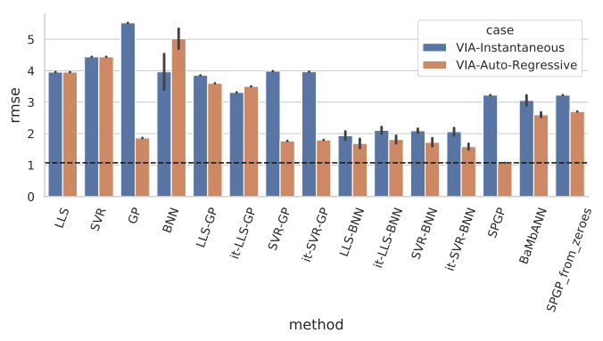

We evaluated semi-parametric Gaussian process regression (SPGP) and a novel model-based neural network architecture (BaMbAnn), and compared their modeling accuracy to a series of naive semi-parametric, parametric-only and non-parametric-only regression methods. The comparison has been carried out on three test scenarios, one involving a real test-bed and two involving simulated scenarios, with the most complex scenario targeting the modeling of a simulated 3-link robot’s inverse dynamics model.
Technology Stack: Python, Tensorflow, Scikit-Learn, C++, Limbo
Work Affiliation: German Aerospace Center (DLR), in collaboration with Florian Loeffl